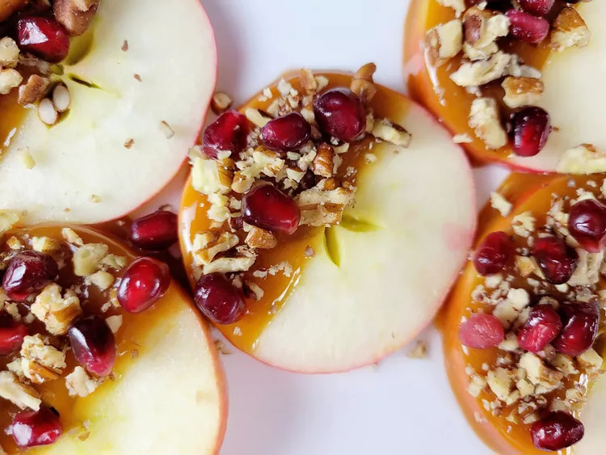

Caramel Apple Slices
Description
These caramel apple slices combine the crisp, natural flavor of apple with caramel and pecans for the perfect balance of sweet and savory. The pomegranate seeds add an extra burst of flavor.

Ingredients
- 2 pink lady apples
- 1 lemon, juiced
- 1 cup purchased caramel sauce, or more as needed
- 1/2 cup chopped pecans
- 1/2 cup pomegranate seeds
Directions
- Line a tray with parchment. Cut both apples into thick round slices, about 8 total slices. Place apples in a shallow dish and squeeze lemon juice over both sides.
- Heat caramel sauce in a microwave-safe bowl until softened, about 30 seconds.
- With a paper towel, dry each apple slice, and dip half the apple into caramel sauce. Place dipped apple on the prepared tray. Repeat until all apples have been dipped. Refrigerate until firm, 30 to 40 minutes.
- Sprinkle pecans and pomegranate seeds onto caramel-dipped side of each apple.